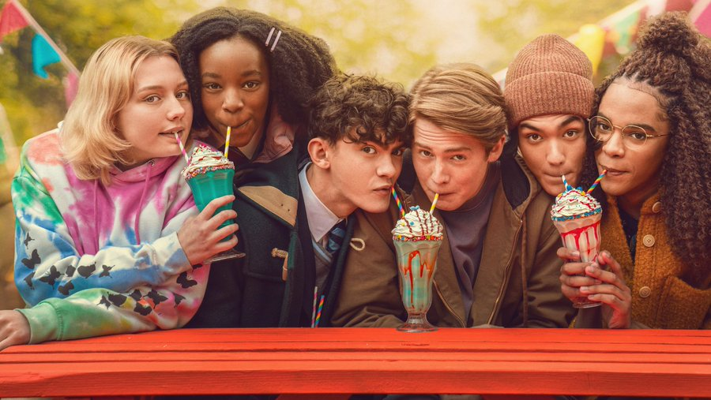
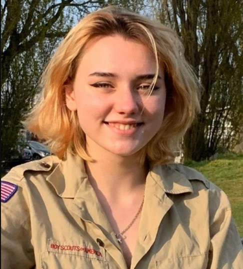

Kit Sebastian Connor, mais conhecido como Kit Connor, é um ator inglês. Ele é conhecido pelos seus papéis no cinema como Tom em Get Santa, como o adolescente Nick Nelson em Heartstopper, além do jovem Elton John em Rocketman
Nascimento: 8 de março de 2004 (idade: 18 anos), Purley, Reino Unido

Joseph William Locke, mais conhecido como Joe Locke, é um ator manês. Ele é conhecido por seu papel como Charlie Spring na série da Netflix Heartstopper.
Nascimento: 24 de setembro de 2003 (idade: 18 anos), Douglas, Ilha de Man

Yasmin Finney é uma atriz inglesa e personalidade da Internet. Ela apareceu na segunda lista anual 20 Under 20 da GLAAD. Ela é conhecida por seu papel na série da Netflix Heartstopper como Elle Argent. Em maio de 2022, foi anunciado que ela se juntaria ao elenco de Doctor Who em 2023.
Nascimento: 30 de agosto de 2003 (idade: 18 anos), Manchester, Reino Unido

William Gao é ator, músico e modelo britânico, mais conhecido por interpretar Tao Xu em Heartstopper, seu primeiro trabalho.
Nascimento: 20 de fevereiro de 2003 (idade: 19 anos.), Manchester, Reino Unido

Corrina Brown é atriz britânica, conhecida por interpretar Tara Jones, na série da Netflix Heartstopper.
Nascimento: 24 de dezembro de 1998 (idade: 23 anos.)

Kizzy Edgell é uma atriz britânica, conhecida por interpretar Darcy Olsson, na série da Netflix Heartstopper.
Nascimento: 1 de agosto de 2002 (idade: 19 anos.)